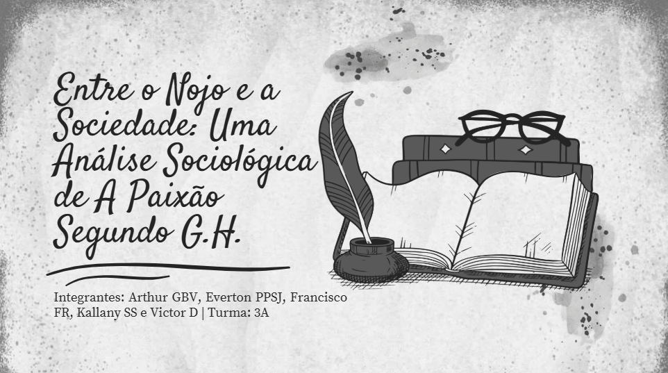
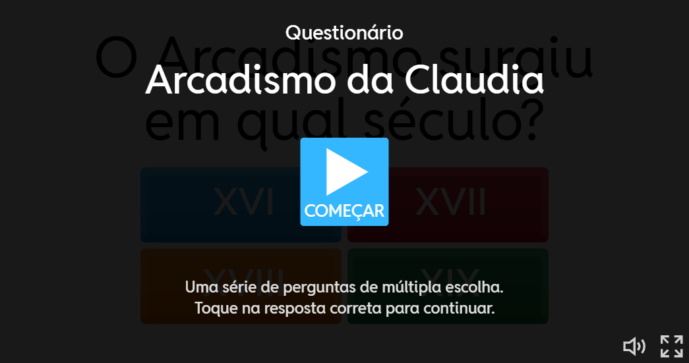
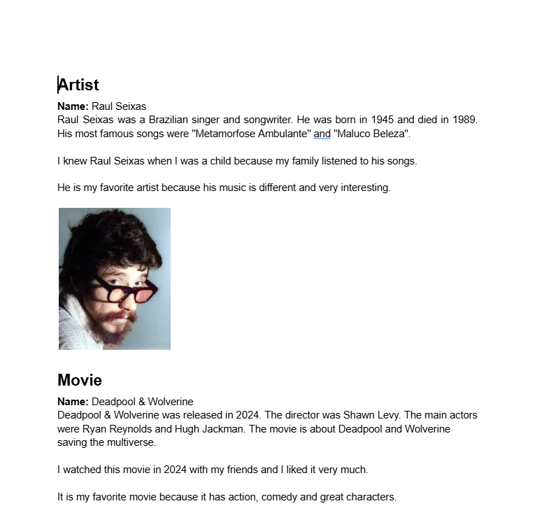
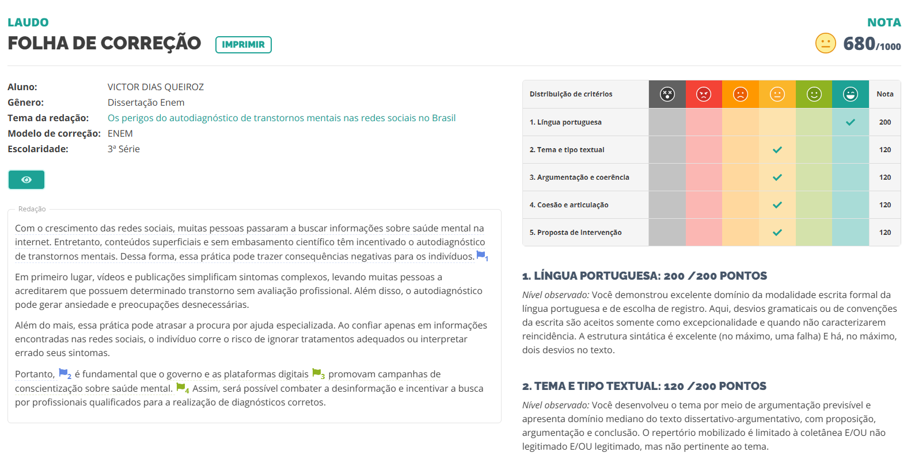

LINGUAGENS
ATIVIDADES

Abrir Análise no Canva ↗Análise: A Paixão segundo G.H
H4 e H22
Analisar a obra de Clarice Lispector, compreendendo suas características literárias e temas centrais da narrativa.
Explanação em sala seguida de organização de trabalho avaliativo estruturado sobre a obra.
"A atividade proporcionou uma reflexão profunda sobre a obra, estimulando o desenvolvimento da capacidade de interpretação e análise crítica."

Jogar no Wordwall ↗Game Literário (Wordwall)
H15
Produzir um trabalho coletivo explorando criatividade e técnicas digitais para criar um jogo interativo.
Desenvolvimento em grupo de um game literário baseado em obras estudadas, integrando conteúdo com ferramentas digitais.
"A atividade foi divertida e instrutiva, permitindo aplicar conhecimentos literários de maneira prática e colaborativa."

Abrir Documento no Docs ↗Artists and Favorite Works
H25
Desenvolver a capacidade de interpretar e produzir textos em Língua Inglesa, utilizando o Simple Past para apresentar informações sobre artistas, filmes e músicas, além de ampliar o vocabulário relacionado à cultura e às artes.
A atividade consistiu na produção individual de textos em inglês sobre um artista, um filme e uma música favoritos. Foi necessário pesquisar informações sobre suas histórias, autores, obras e características, além de apresentar motivos pessoais para as escolhas. A atividade também incentivou o uso do Simple Past e a utilização de imagens relacionadas aos conteúdos pesquisados.
"A atividade foi interessante, pois permitiu praticar o inglês falando sobre assuntos de interesse pessoal. Também foi uma oportunidade de conhecer melhor artistas e obras favoritas enquanto desenvolvia a escrita e o uso do Simple Past."

[Laudo: Correção da Redação RED1000 - Nota 680/1000]
Redação RED1000 – 2º Trimestre
H22
Desenvolver a capacidade de produzir textos técnicos e dissertativo-argumentativos de acordo com uma estrutura estabelecida, organizando ideias de forma clara, coerente e adequada à proposta apresentada.
A atividade consistiu na produção de uma redação para o Red1000, seguindo uma estrutura previamente estabelecida e aplicando conhecimentos de argumentação, organização textual e uso adequado da Língua Portuguesa. Após a correção, foi realizado o registro da nota obtida para composição do portfólio.
"A atividade foi importante para aprimorar minha escrita e minha capacidade de organizar argumentos, além de permitir identificar pontos que poderiam ser melhorados na produção de textos."
Manifesto Contemporâneo
H3 e H24
Compreender as características do gênero argumentativo manifesto, analisando o posicionamento crítico e a linguagem utilizada por Oswald de Andrade em suas obras, além de desenvolver a capacidade de produzir um texto autoral com argumentos e propostas sobre temas atuais.
A atividade consistiu no estudo do Manifesto Pau-Brasil e do Manifesto Antropófago, de Oswald de Andrade, relacionando-os ao contexto do Modernismo brasileiro e da Semana de Arte Moderna. Em seguida, foi produzido, em grupo, um manifesto contemporâneo sobre um tema atual, utilizando argumentos, frases de impacto e recursos audiovisuais para criar uma apresentação digital em vídeo.
"A atividade foi criativa e interessante, pois permitiu conhecer melhor o Modernismo brasileiro e utilizar suas características para expressar opiniões sobre questões atuais. A produção do manifesto em vídeo também tornou o trabalho mais dinâmico e participativo."
As atividades do 3º trimestre serão adicionadas aqui em breve.